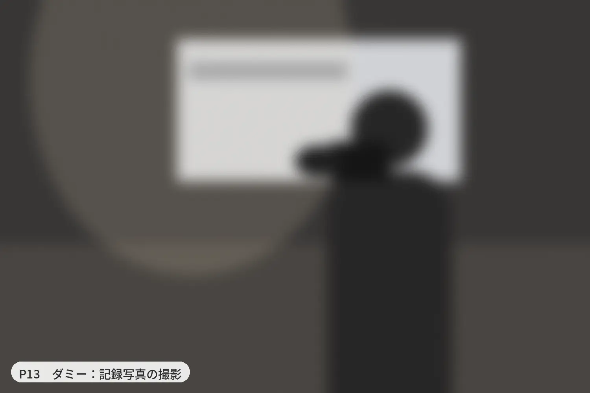
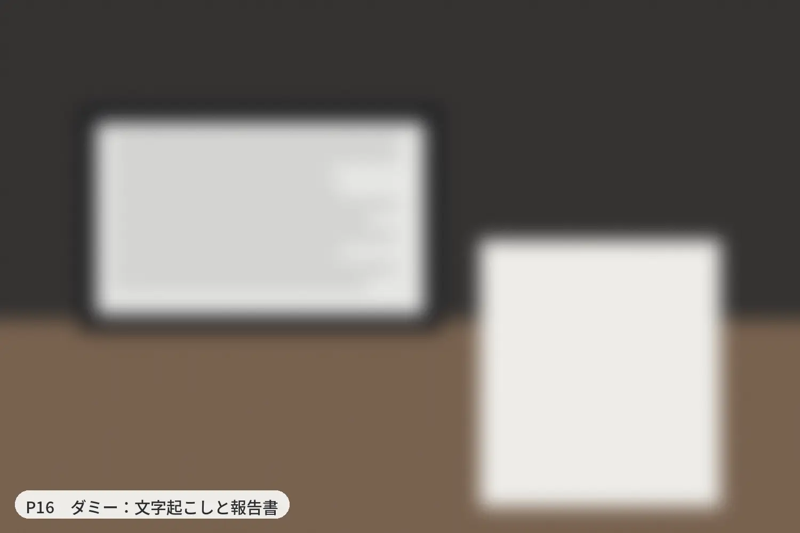

［主催機関名］［会の名称］
- 会の規模
- 登壇［ ］人、会場［ ］人、オンライン視聴［ ］人、［ ］時間
- 当日の体制
- スタッフ［ ］名（映像1名、音声・配信1名）
- 使用機材
- カメラ［ ］台、マイク［ ］本、予備機材あり
- 金額
- ［25万〜30万円］
- 当日起きたこと
- ［トラブルと、どう戻したか］
確認用のプレビューです。黄色い［ ］は、これから入れる情報です。フォームはまだどこにも送信されません。
本文へ移動シンポジウム・講演会・公開講座のライブ配信／ハイブリッド配信（会場＋オンライン）シンポジウム・講演会のライブ配信／ハイブリッド配信（会場＋オンライン）
カメラ3台・スタッフ2名・マイク5本。25万円（税別）。
診断は1分ほど。おすすめのプランと、追加になる費用までわかります
配信画面のイメージ
話す人が替わるたびに、映像担当がカメラ1を向け直して切り替えます。表情まで届きます。
Plan check
登壇者の人数や質疑の有無から、おすすめのプランと、追加になる費用までわかります。iPhoneで足りる会なら、そうお伝えします。
1 / 8
Price
誰が来て、何を持ち込み、何をするか。見積書にも同じ内容を記載します。
御見積書
| 内容 | 金額（税別） |
|---|---|
| ハイブリッド配信 スタンダード配信3時間まで、会場での作業6時間まで | 250,000 |
| 映像担当 1名カメラ3台の操作、配信画面の切り替え | 一式に含む |
| 音声・配信担当 1名マイクと音量の調整、配信の監視、登壇者PCの接続 | 一式に含む |
| カメラ 3台発表スライドの映像取り込みを含む | 一式に含む |
| マイク 5本まで会場設備のマイク音声の取り込みを含む | 一式に含む |
| 予備の録画機・予備のインターネット回線録画、回線とも2系統 | 一式に含む |
| 事前の打ち合わせ、会場の下見 | 一式に含む |
| 録画データの納品 | 一式に含む |
| 小計 | 250,000 |
| 消費税（10%） | 25,000 |
| 合計 | 275,000 |
追加料金が発生する条件：配信時間の延長、スタッフの追加、カメラの追加、会場に回線がない場合、対応エリア外の交通費・宿泊費
スタンダード
25万円（税別）

カメラ3台の操作と、配信画面の切り替え
［氏名・経歴一行］

マイクと音量の調整、配信の監視、登壇者PCの接続
［氏名・経歴一行］
| 種類 | 機種 | 数 | 用途 |
|---|---|---|---|
| カメラ | ［機種名］ | 3台 | 話している人のアップ、登壇者全体、会場全体 |
| マイク | ［機種名］ | 5本 | 登壇者4人分と、会場の質問用1本 |
| 画面の切り替え機 | ［機種名］ | 1台 | 発表スライドとカメラ映像の切り替え |
| 録画機 | ［機種名］ | 2系統 | 片方が止まっても、もう片方で記録を残します |
| 回線 | ［回線の種類］ | 2系統 | 会場の回線が切れても、予備回線で配信を続けます |
| 条件 | 追加料金（税別） |
|---|---|
| 配信時間を1時間延長する | ［金額］ |
| スタッフを1名追加する オンライン登壇者がいる場合、マイク6本以上の場合 | ［金額］ |
| カメラを1台追加する | ［金額］ |
| 会場に使えるインターネット回線がない | ［金額］ |
| 対応エリア外の交通費・宿泊費 対応エリアは新宿から90分圏内です | 実費 |
上司への説明や、相見積にそのまま使えます
On the day
登壇者を迎え、進行を見守り、来賓に挨拶する。配信の実務はスタッフ2名にお任せください。
会場のマイク音声を配信機材に直接取り込みます。会場にマイクがなければ5本まで持ち込みます。音が悪いと、研究まで低く見られます（Newman & Schwarz 2018）。
客席の後ろから、話している人の表情を撮ります。来場者の視界をふさぎません。
発表スライド、登壇者、会場全体の映像を状況に合わせて切り替えます。スライドの隅に登壇者の顔を出すこともできます。
録画機もインターネット回線も2系統ずつ用意します。どれか1つが止まっても、配信と記録は続きます。
事前に「復旧手順書」を1枚お渡しします。何が止まったら、誰が、何分で、どう復旧するかを明記しています。
復旧手順書
| 何が止まったら | 誰が | どう戻すか | 目安 |
|---|---|---|---|
| 会場のインターネット回線が切れた | 音声・配信担当 | 予備回線に切り替えて配信を続ける | ［ ］分 |
| 録画機が止まった | 映像担当 | もう1台の録画機で記録を続ける（常に2系統で録画） | 中断なし |
| マイクの音が出ない | 音声・配信担当 | 予備のマイクに交換する。会場設備の音声にも切り替えられる | ［ ］分 |
| 登壇者PCの画面が映らない | 音声・配信担当 | 予備のケーブルと変換器に交換する | ［ ］分 |
実物は、会場の設備と回線に合わせて会ごとに作成し、事前にお渡しします。
Works
すべての事例を同じ項目で掲載しています。ご自身の会に近いものを探してみてください。

［頼む前に不安だったこと、当日どうだったか。2〜3行］
登壇1人／30人以下
登壇2〜6人／会場50〜300人
複数会場／同時通訳
迷った方は、8問のプラン診断でご確認いただけます
Tools
お手元のスマホでお試しください。当日の質疑応答と進行がどう進むかを確認できます。
会場とオンラインからの質問を1か所に集め、選んだ質問だけを登壇者の画面に表示します。下の画面に質問を送ると、スタッフの一覧に届きます。
動きを体験するための簡易版です。実物は、当日スタッフが用意して操作します。
選んだ質問だけが、ここに表示されます
これらの道具は、当日私たちが用意して操作します。ご自身で使えるようになりたい方には、コーチングをご用意しています。
Options
記録写真も、記録映像も、同じ日にまとめてご依頼いただけます。見積も請求も打ち合わせも1回で済みます。

報告書や広報に使える写真を、専任カメラマン1名が撮影します

話している人に合わせて画面を切り替えた記録映像を、字幕つきで作成します

次回の告知や、成果報告に使える短いまとめ映像を作ります

報告書の下書きにそのまま使えるテキストデータを作成します
Coaching
小さい会はご自身で、大きい会だけ私たちにお任せください。手順書とチェックリストが残るので、担当者が替わっても引き継げます。
［3万円］
オンライン60分。機材と接続の図、当日のチェックリストを作成します
［代行＋3万円］
私たちの配信現場に入り、実際の動きを横で見て覚えます
［12万円］
ご自身で配信を操作し、私たちは横で待機します
［5万円］
事前の機材点検と、当日のオンライン待機だけで見守ります
For universities
稟議や相見積に必要な書類を、お問い合わせの前からご用意しています。
決まっているのは日程と会場だけでかまいません
1営業日以内に、宛名入りのPDFでお送りします
オンラインで30分の打ち合わせと、会場の下見を行います
当日、スタッフ2名で会場に伺います
完了報告書、納品書、請求書をまとめてお送りします
配信業務の仕様書（A4 1枚、Word形式）と、見積書の見本をお送りします。他社への相見積にもそのままお使いください。
FAQ
［最短の日数と、繁忙期の目安］
［対応している配信先］
対応できます。スタッフを1名追加します（［金額］）。
配信用の回線を持ち込みます（［金額］）。事前に会場で電波状況を確認します。
［返金・減額の規定］
新宿駅からおおむね90分以内で伺える会場が対応エリアです。エリア内は、会場の下見も交通費も25万円に含まれます。エリア外の会場は、交通費と宿泊費の実費で伺います。
1営業日以内に、宛名入りの見積書PDFをメールでお送りします。詳しい内容は、その後のやりとりで詰めていきます。
［年度末（2〜3月）の空き日程：残り〇日］
お電話でも受け付けています［電話番号］［受付時間］
カルラライブの基本プラン「スタンダード」は、カメラ3台・スタッフ2名・マイク5本までで25万円（税別）です。誰が来て、何を持ち込み、何をするかを、このページにすべて載せています。
見積書にも、ここに書いてあるとおりの内容を記載します。「配信業務一式」の1行だけの見積書はお出ししません。
御見積書
| 内容 | 金額（税別） |
|---|---|
| ハイブリッド配信 スタンダード配信3時間まで、会場での作業6時間まで | 250,000 |
| 映像担当 1名カメラ3台の操作、配信画面の切り替え | 一式に含む |
| 音声・配信担当 1名マイクと音量の調整、配信の監視、登壇者PCの接続 | 一式に含む |
| カメラ 3台発表スライドの映像取り込みを含む | 一式に含む |
| マイク 5本まで会場設備のマイク音声の取り込みを含む | 一式に含む |
| 予備の録画機・予備のインターネット回線録画、回線とも2系統 | 一式に含む |
| 事前の打ち合わせ、会場の下見 | 一式に含む |
| 録画データの納品 | 一式に含む |
| 小計 | 250,000 |
| 消費税（10%） | 25,000 |
| 合計 | 275,000 |
追加料金が発生する条件：配信時間の延長、スタッフの追加、カメラの追加、会場に回線がない場合、対応エリア外の交通費・宿泊費
スタンダード
25万円（税別）
カメラ3台の操作と、配信画面の切り替え
［氏名・経歴一行］
マイクと音量の調整、配信の監視、登壇者PCの接続
［氏名・経歴一行］
| 種類 | 機種 | 数 | 用途 |
|---|---|---|---|
| カメラ | ［機種名］ | 3台 | 話している人のアップ、登壇者全体、会場全体 |
| マイク | ［機種名］ | 5本 | 登壇者4人分と、会場の質問用1本 |
| 画面の切り替え機 | ［機種名］ | 1台 | 発表スライドとカメラ映像の切り替え |
| 録画機 | ［機種名］ | 2系統 | 片方が止まっても、もう片方で記録を残します |
| 回線 | ［回線の種類］ | 2系統 | 会場の回線が切れても、予備回線で配信を続けます |
| 条件 | 追加料金（税別） |
|---|---|
| 配信時間を1時間延長する | ［金額］ |
| スタッフを1名追加する オンライン登壇者がいる場合、マイク6本以上の場合 | ［金額］ |
| カメラを1台追加する | ［金額］ |
| 会場に使えるインターネット回線がない | ［金額］ |
| 対応エリア外の交通費・宿泊費 対応エリアは新宿から90分圏内です | 実費 |
Options
記録写真も、記録映像も、同じ日にまとめてご依頼いただけます。見積も請求も打ち合わせも1回で済みます。
報告書や広報に使える写真を、専任カメラマン1名が撮影します
話している人に合わせて画面を切り替えた記録映像を、字幕つきで作成します
次回の告知や、成果報告に使える短いまとめ映像を作ります
報告書の下書きにそのまま使えるテキストデータを作成します
対応できます。スタッフを1名追加します（［金額］）。
配信用の回線を持ち込みます（［金額］）。事前に会場で電波状況を確認します。
［返金・減額の規定］
新宿駅からおおむね90分以内で伺える会場が対応エリアです。エリア内は、会場の下見も交通費も25万円に含まれます。エリア外の会場は、交通費と宿泊費の実費で伺います。
日程と会場だけ教えてください。1営業日以内に、宛名入りの見積書PDFをメールでお送りします。
どの事例も、会の規模、当日の体制、使用機材、金額、当日起きたことの5項目で掲載しています。ご自身の会に近いものを探してみてください。
［頼む前に不安だったこと、当日どうだったか。2〜3行］
うまくいった話だけを選んで載せることはしません。当日に起きたトラブルと、その戻し方も書きます。
| 項目 | 載せている内容 |
|---|---|
| 会の規模 | 登壇者、会場の来場者、オンライン視聴者の人数と、配信した時間 |
| 当日の体制 | 伺ったスタッフの人数と、それぞれの役割 |
| 使用機材 | カメラとマイクの数、予備機材の有無 |
| 金額 | 実際にお支払いいただいた金額の幅 |
| 当日起きたこと | うまくいかなかったことと、それをどう戻したか |
日程と会場だけ教えてください。1営業日以内に、宛名入りの見積書PDFをメールでお送りします。
登壇者の人数、会場の規模、質疑や録画の予定など8問に答えると、おすすめのプランと、追加になる費用までわかります。iPhoneで足りる会なら、そうお伝えします。
1 / 8
どの結果でも、そのまま見積のご依頼に進めます。診断の内容は、見積のフォームに入った状態で始まります。
当日に同時にやることが増えるほど、1人では見きれなくなります。その境目を確かめています。
| 質問 | なぜ聞くのか |
|---|---|
| 登壇者の人数 | 2人以上なら、話す人に合わせてカメラを切り替える必要があります。7人以上は、私たちの体制より大きな会です |
| 会場に来る人数 | 100人を超えると、会場の音響設備との接続と、客席後方からの撮影が必要になります |
| オンラインからの登壇 | 会場とオンラインの声を行き来させる必要があり、音声担当の手が足りなくなります。スタッフを1名追加します |
| 会場の質問を届けるか | 配信に入るのは、マイクを通った音だけです。質問用のマイクと、音の経路の設計が必要です |
| 配信する時間 | 3時間を超える場合は、延長料金がかかります |
| 録画の公開・学外の視聴者 | やり直しがきかない会です。予備の録画と予備の回線が欠かせません |
| 同じ日に頼みたいもの | 2つ以上なら、写真・編集・ダイジェスト・文字起こしがすべて入った「まるごと」のほうが割安です |
| 自分たちで配信したいか | 依頼する会でも、コーチング（同行）を組み合わせると、次の会から自分たちで回せるようになります |
15分のオンライン相談で、iPhoneで足りるかどうかから一緒にお話しします。
当日の質疑応答と進行、記録映像の作成に使っている道具です。このページで動きを試せます。当日は、私たちが用意して操作します。
会場とオンラインからの質問を1か所に集め、選んだ質問だけを登壇者の画面に表示します。
動きを体験するための簡易版です。実物は、当日スタッフが用意して操作します。
選んだ質問だけが、ここに表示されます
当日は、会場に掲示したコードをスマホで読み取ると質問を送れます。体験用のコード：［000］
残り時間と合図を、登壇者とスタッフのスマホに表示します。進行の遅れを防ぎます。
動きを体験するための簡易版です。実物は、当日スタッフが用意して操作します。
合図を押すと、登壇者のスマホに大きく表示されます。声をかけずに進行を伝えられます。
3台のカメラの映像から、話している人に合わせて切り替えた記録映像と字幕を作ります。
右の画面は、切り替えと字幕の動きを示したイラストです。小さい画面を押すと、手動でも切り替えられます。［3カメの素材と完成した映像の比較動画。30秒］
配信画面のイメージ
話す人が替わるたびに、映像担当がカメラ1を向け直して切り替えます。表情まで届きます。
ご担当者や登壇者に、事前の設定をお願いすることはありません。登壇者には、スマホで見る画面だけをご案内します。
1営業日以内に、宛名入りの見積書PDFをメールでお送りします。
小さい会はご自身で、大きい会だけ私たちにお任せください。相談から卒業までの4段階で、配信を自分たちで回せる体制をつくります。手順書とチェックリストが残るので、担当者が替わっても引き継げます。
段階が進むごとに、操作する人が私たちからご担当者に移ります。
［3万円］
オンライン60分。機材と接続の図、当日のチェックリストを作成します
操作する人：まだ決めなくて大丈夫です
［代行＋3万円］
私たちの配信現場に入り、実際の動きを横で見て覚えます
操作する人：私たち。ご担当者は横で見ます
［12万円］
ご自身で配信を操作し、私たちは横で待機します
操作する人：ご担当者。私たちは会場で待機します
［5万円］
事前の機材点検と、当日のオンライン待機だけで見守ります
操作する人：ご担当者。私たちはオンラインで待機します
必要な段階だけを選べます。相談だけで終える方もいます。
Plan check
8問のプラン診断で、ご自身で配信できるか、相談だけで済むか、依頼したほうがよいかがわかります。
1 / 8
いまの機材と、開いている会の規模を教えてください。どの段階から始めるのがよいかをお答えします。
稟議や相見積に必要な書類を、お問い合わせの前からご用意しています。見積書・納品書・請求書の3点を発行し、請求書払い（後払い）に対応しています。
お問い合わせから請求まで、5つの手順で進みます。決まっているのは日程と会場だけでかまいません。
決まっているのは日程と会場だけでかまいません
1営業日以内に、宛名入りのPDFでお送りします
オンラインで30分の打ち合わせと、会場の下見を行います
当日、スタッフ2名で会場に伺います
完了報告書、納品書、請求書をまとめてお送りします
配信業務の仕様書（A4 1枚、Word形式）と、見積書の見本をお送りします。他社への相見積にもそのままお使いください。
歓迎します。仕様書のひな形と見積書の見本もお送りしますので、他社への依頼にもそのままお使いください。
請求書払い（後払い）に対応しています。見積書・納品書・請求書の3点を発行します。
［最短の日数と、繁忙期の目安］
［返金・減額の規定］
新宿駅からおおむね90分以内で伺える会場が対応エリアです。エリア内は、会場の下見も交通費も25万円に含まれます。エリア外の会場は、交通費と宿泊費の実費で伺います。
1営業日以内に、宛名入りの見積書PDFをメールでお送りします。
依頼の前によく聞かれることに答えています。ここにない質問は、見積のご依頼と一緒にお書きください。
［最短の日数と、繁忙期の目安］
［対応している配信先］
対応できます。スタッフを1名追加します（［金額］）。
配信用の回線を持ち込みます（［金額］）。事前に会場で電波状況を確認します。
［返金・減額の規定］
新宿駅からおおむね90分以内で伺える会場が対応エリアです。エリア内は、会場の下見も交通費も25万円に含まれます。エリア外の会場は、交通費と宿泊費の実費で伺います。
必要です。スタンダードに含まれています。電源、回線、会場設備のマイク、カメラを置く位置を事前に確認します。
はい。録画データの納品はスタンダードに含まれています。話している人に合わせて切り替えた記録映像や字幕が必要な場合は、オプションの「記録映像の編集」をご利用ください。
8問のプラン診断でご確認いただけます。iPhoneで足りる会なら、そうお伝えします。
歓迎します。仕様書のひな形と見積書の見本もお送りしますので、他社への依頼にもそのままお使いください。
請求書払い（後払い）に対応しています。見積書・納品書・請求書の3点を発行します。
配信コーチングをご用意しています。相談、同行、伴走、卒業の4段階で、手順書とチェックリストが手元に残ります。
1営業日以内に、宛名入りの見積書PDFをメールでお送りします。
必須の4項目だけで送信できます。1営業日以内に、宛名入りの見積書PDFをメールでお送りします。
御見積書
| 内容 | 金額（税別） |
|---|---|
| ハイブリッド配信 スタンダード配信3時間まで、会場での作業6時間まで | 250,000 |
| 映像担当 1名カメラ3台の操作、配信画面の切り替え | 一式に含む |
| 音声・配信担当 1名マイクと音量の調整、配信の監視、登壇者PCの接続 | 一式に含む |
| カメラ 3台発表スライドの映像取り込みを含む | 一式に含む |
| マイク 5本まで会場設備のマイク音声の取り込みを含む | 一式に含む |
| 予備の録画機・予備のインターネット回線録画、回線とも2系統 | 一式に含む |
| 事前の打ち合わせ、会場の下見 | 一式に含む |
| 録画データの納品 | 一式に含む |
| 小計 | 250,000 |
| 消費税（10%） | 25,000 |
| 合計 | 275,000 |
追加料金が発生する条件：配信時間の延長、スタッフの追加、カメラの追加、会場に回線がない場合、対応エリア外の交通費・宿泊費
［電話番号］［受付時間］
［担当者の声を1件。頼む前の不安に触れているもの］
これは送信完了ページの見本です。フォームの送信先がまだ設定されていないため、実際には何も送信されていません。
1営業日以内に、宛名入りの見積書PDFをメールでお送りします。確認メールが届かない場合は、［電話番号］までご連絡ください。
見積のご依頼を受け付けました
見積書PDFがメールで届きます
必要に応じて30分の打ち合わせを行い、ご発注後に会場を下見します
上司への説明や相見積にそのまま使える書類です。どれも登録なしでダウンロードできます。
自前で配信するか業者に頼むかの判断、ハイブリッドの音の失敗、仕様書の書き方。シンポジウムの担当者が、最初に知っておくと楽になることをまとめています。
1営業日以内に、宛名入りの見積書PDFをメールでお送りします。
登壇者が1〜2人で、会場からの質疑をオンラインに届けなくてよい会なら、iPhone1台と外付けマイク1本で配信できます。登壇者が3人以上いる、会場の質問をオンラインにも届けたい、スライドと話し手の両方を映したい。このどれかに当てはまると、1人では回らなくなります。
| 条件 | iPhoneで足りる | 足りない |
|---|---|---|
| 登壇者 | 1〜2人で、立ち位置が変わらない | 3人以上、または席が離れている |
| 質疑 | 会場の中だけで完結する | 会場の質問をオンラインにも届けたい |
| 映すもの | 話し手だけ、またはスライドだけ | スライドと話し手を切り替えたい |
| 時間 | 2時間以内 | 2時間を超える |
| 視聴者 | 学内や関係者だけ | 学外の視聴者、来賓、助成元がいる |
| 録画 | 残さない、または内部の記録用 | アーカイブとして公開する |
右の列に1つ当てはまるだけなら、工夫で乗り切れることもあります。2つ以上当てはまると、当日に同時にやることが増えて、1人では見きれなくなります。
ご自身の会がどちらに当たるかは、8問のプラン診断で確かめられます。自分たちで続けていきたい場合は、機材と接続の図、当日のチェックリストを一緒に作る配信コーチングがあります。
1営業日以内に、宛名入りの見積書PDFをメールでお送りします。
原因のほとんどは、会場のスピーカーから出た音をマイクが拾い、もう一度配信に戻っていることです。「会場に流す音」と「配信に送る音」を分けて管理すれば止まります。
オンライン参加者の声が会場のスピーカーから出て、それを会場のマイクが拾い、またオンライン側に戻っています。配信用のPCの内蔵マイクと内蔵スピーカーをそのまま使っていると、ほぼ確実に起きます。
配信用のPCの音が、会場の音響設備につながっていません。PCの音声出力からミキサーへ、ケーブルを1本つなぎます。会議アプリの「スピーカー」の設定が、その出力になっているかも確かめます。
質問する人が、マイクを使わずに話しています。会場では聞こえても、配信に入るのはマイクを通った音だけです。
「会場に流す音」と「配信に送る音」を分けて考えると、3つの失敗はまとめて防げます。
カルラライブのスタンダードは、マイクを5本まで持ち込みます。登壇者4人分と、会場の質問用の1本です。会場設備のマイクがあれば、その音も配信機材に直接取り込みます。音声と配信の担当が1名つき、本番中は音を聞き続けます。
1営業日以内に、宛名入りの見積書PDFをメールでお送りします。
仕様書に必要なのは、日時、会場、登壇者の人数、配信先、質疑の有無、録画の扱いの6つです。この6つがそろえば、業者ごとの見積を同じ条件で比べられます。
| 項目 | 書くこと | 書き方の例 |
|---|---|---|
| 日時 | 開催日、配信の開始と終了、会場に入れる時刻 | 2027年2月20日（土）13:00〜16:00。会場には10:00から入れる |
| 会場 | 建物と部屋の名前、定員、使える設備 | 〇〇大学 △△ホール（定員200人）。有線LANとワイヤレスマイク4本あり |
| 登壇者の人数 | 人数と形式、オンラインからの登壇があるか | 基調講演1人、パネルディスカッション4人。うち1人はオンラインから参加 |
| 配信先 | 使うサービスと、公開する範囲 | Zoomウェビナー。事前に登録した人だけが視聴する |
| 質疑の有無 | 会場とオンラインの、どちらから受けるか | 会場はマイクで、オンラインは文字で受け付ける |
| 録画の扱い | 納品の形式、編集の有無、公開の予定 | 録画データをMP4で納品。後日、大学のサイトで公開する |
まだ決まっていない項目は、「未定」と書いてかまいません。空欄にするより、未定と書いてあるほうが、業者は前提をそろえて見積を出せます。
見積書が「配信業務一式」の1行だけだと、何が含まれているかを比べられません。仕様書に次の一文を入れておくと、内訳のそろった見積書が集まります。
見積書には、スタッフの人数と役割、持ち込む機材の内訳を記載すること。
ここに挙げた6項目を並べた、A4 1枚のひな形（Word形式）を用意しています。見積書の見本と一緒にお送りします。他社への相見積にもそのままお使いください。
1営業日以内に、宛名入りの見積書PDFをメールでお送りします。
［この文面は下書きです。公開前に、運営の実態に合わせて確認してください］
カルラライブ（以下「当サービス」）は、お問い合わせや見積のご依頼でお預かりした個人情報を、次のとおり取り扱います。
フォームにご記入いただいた、開催日、会場、人数、メールアドレス、お名前、ご所属、ご相談の内容。
フォームを送信いただいても、こちらから電話での営業はいたしません。
法令にもとづく場合を除き、ご本人の同意なく第三者に提供することはありません。
サイトの改善のために、［利用する解析ツール］を使ってアクセスの状況を集計しています。個人を特定する情報は含みません。
［運営者名］ ［連絡先］
［制定日］